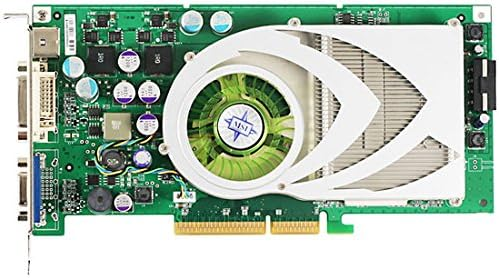

NVIDIA
GeForce 7800 GS
2006
AGP 8x
DirectX 9c
Act II — AGP's Last Stand

The story
Played on this card
Detecting your device…
The big picture →
How your phone compares to all six cards combined
The collection
2003
GeForce FX 5600
2004
Radeon 9550
2006
GeForce 7800 GS
2007
Radeon HD 2900 XT
2009
Radeon HD 5750
2013
GeForce GTX 760 FTW
← Back to collection